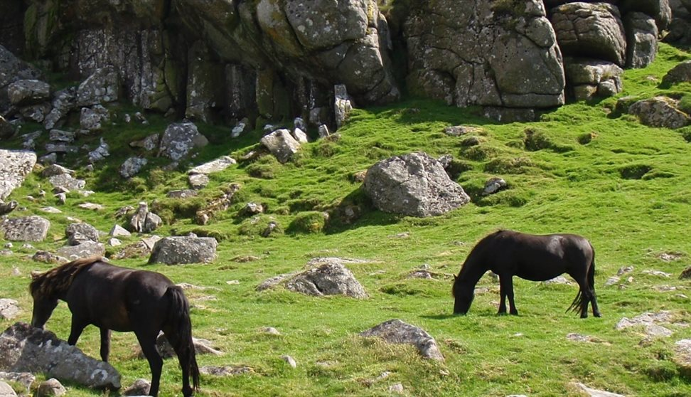
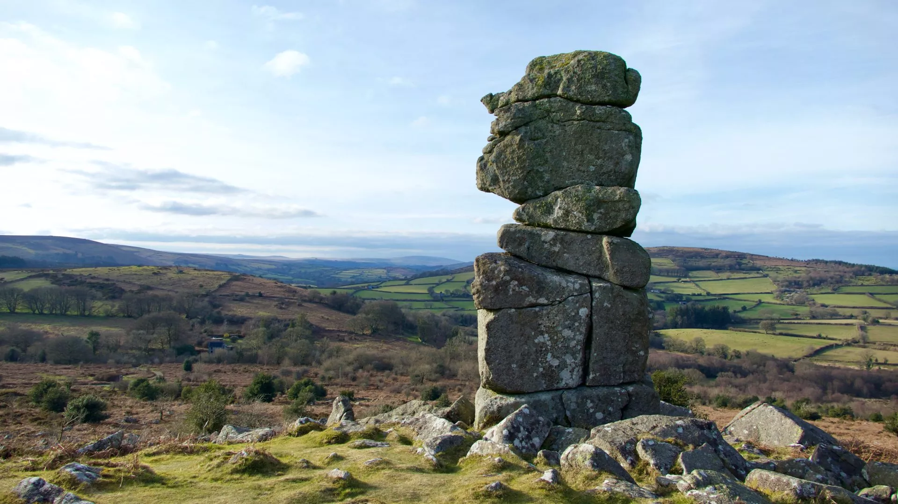
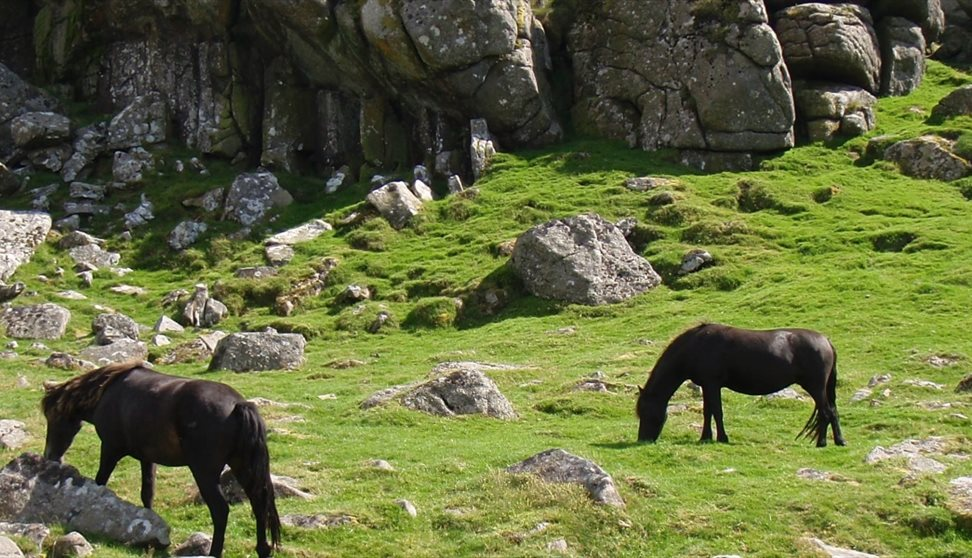
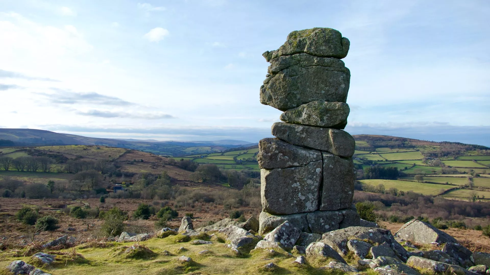
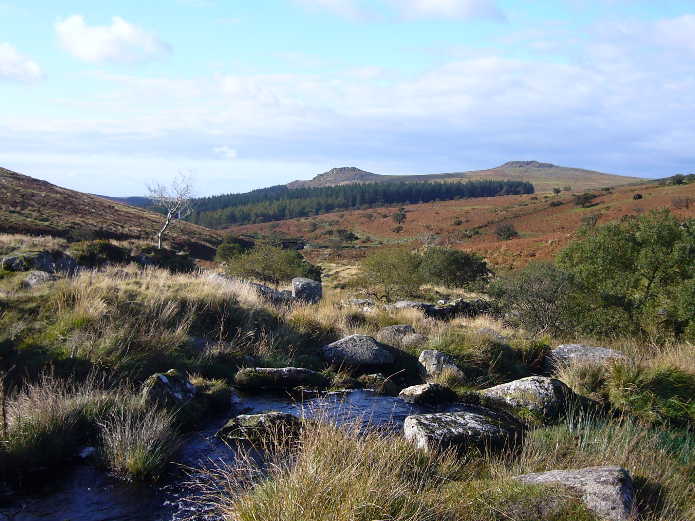
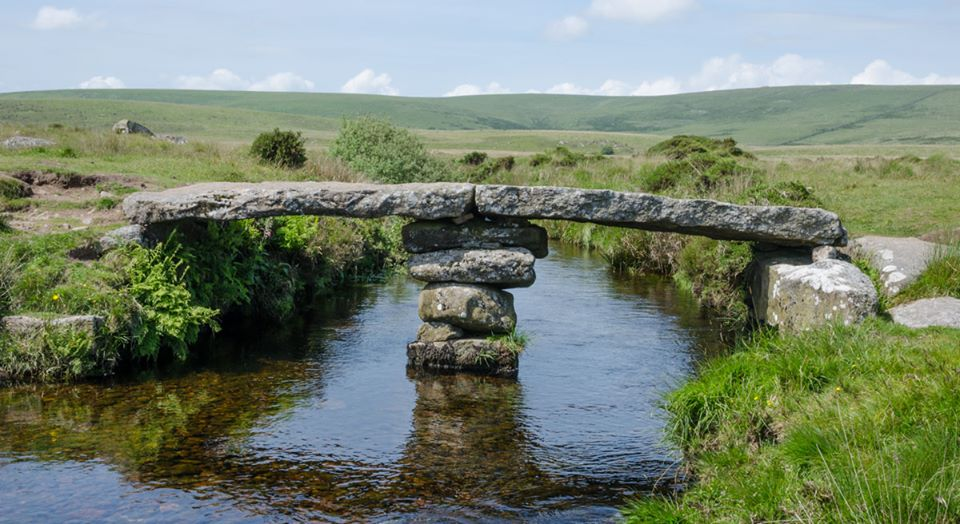
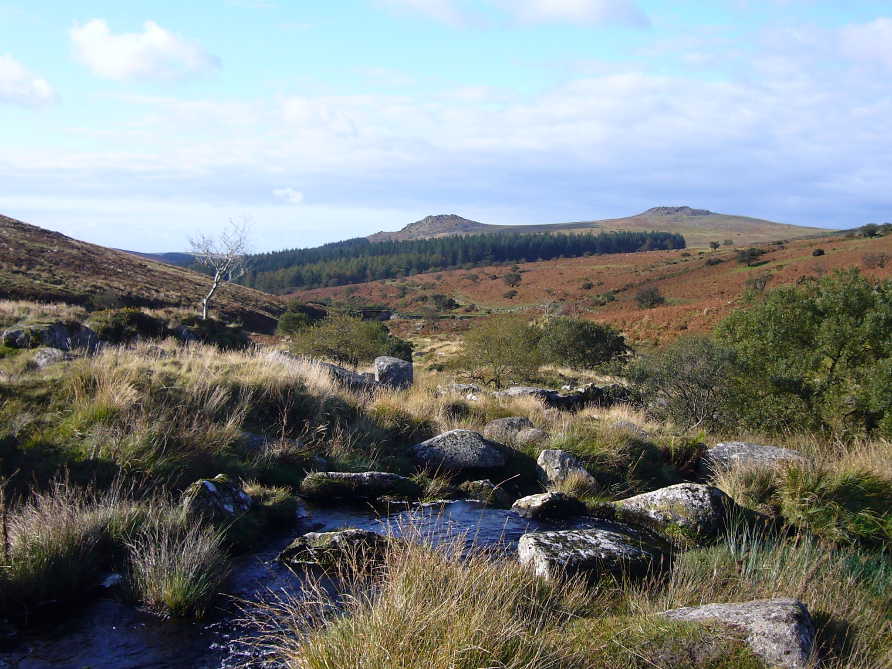
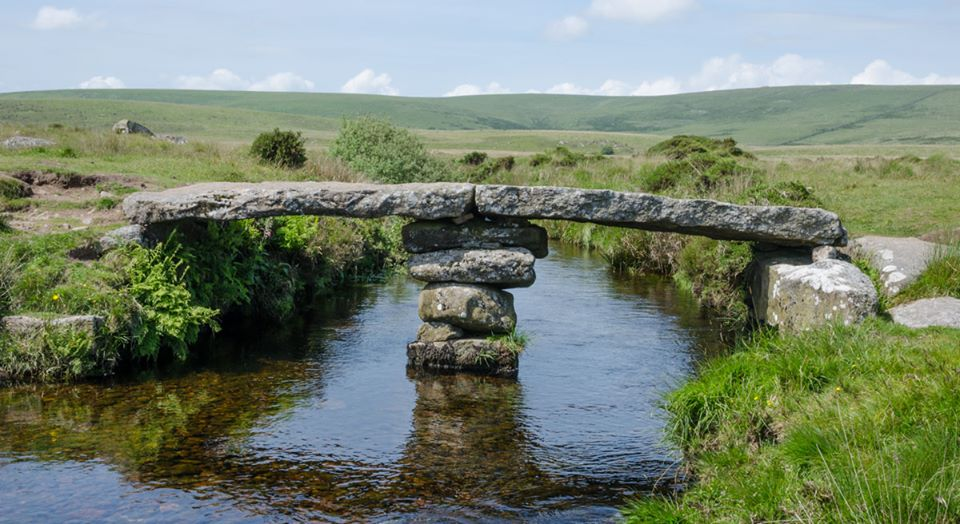

In the face of our ecological unraveling, time as we know it is rupturing. Around the world, buds bloom too early, winters don’t quite arrive, and time bends as long-buried carbons emerge to haunt the future. As we increasingly run out of time, accelerating towards climate catastrophe, how can we free ourselves from the clutch of the minute hand and embrace the possibilities inherent in every moment?
This April, join us in the ancient and mysterious region of Dartmoor, in Devon, England for a four-day retreat led by Sufi teacher and Emergence’s founder and executive editor Emmanuel Vaughan-Lee that will consider how we can attune to a sense of time rooted in the living world.
Expanding upon Emergence’s forthcoming print edition, Vol 5: TIME, this gathering will open participants to move beyond the time-bound consciousness of control, separation, and linearity we have created, and towards a different kind of time in which we are attentive to our present moment of ecological crisis and transformation. Through talks, writing workshops, storytelling, meditation, and nature connection practices, we will remember the cycles and rhythms of the Earth.

 



 


